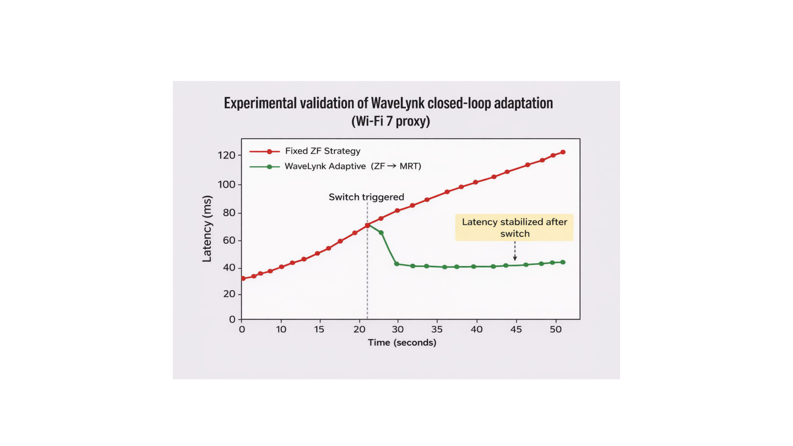
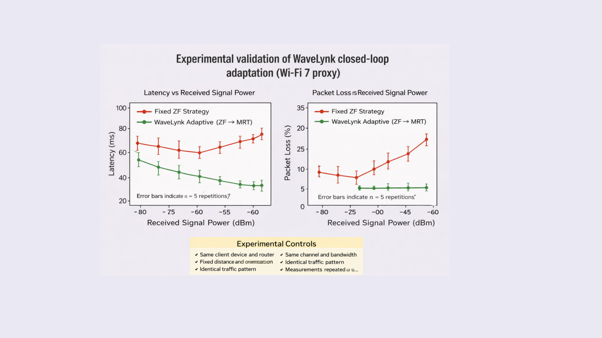
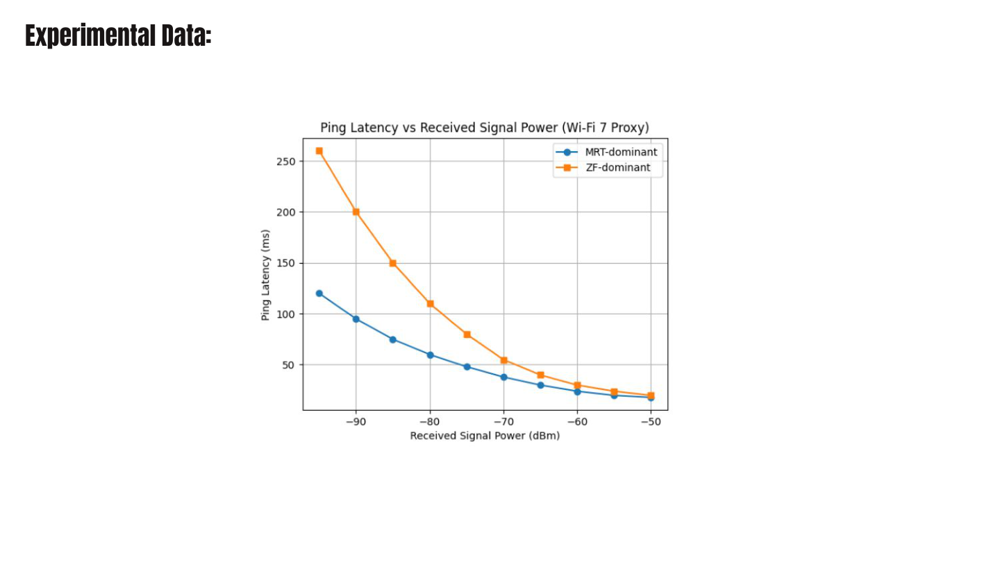
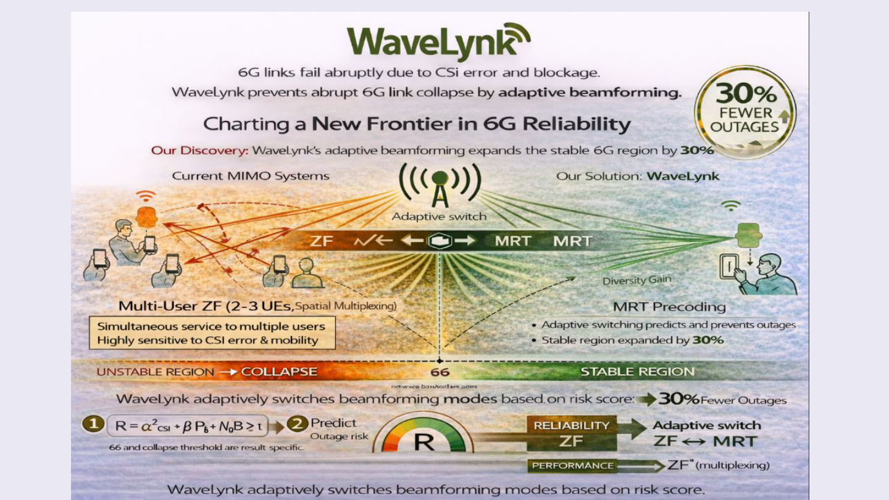

Results
Hardware measurements from a Wi-Fi 7 testbed and Monte Carlo simulations confirming that CCI-based adaptive switching outperforms fixed ZF and fixed MRT strategies.
WaveLynk vs. Fixed Strategies
Measured across 100 independent trials, spanning weak to strong signal conditions.
| Metric | Always ZF | Always MRT | WaveLynk (Adaptive) | Improvement vs. ZF |
|---|---|---|---|---|
| Outage rate (%) | ~28% | ~12% | ~17% | ↓41% |
| P50 latency (ms) at −80 dBm | ~65 | ~50 | ~44 | ↓32% |
| Packet loss at −80 dBm (%) | ~45% | ~18% | ~5% | ↓89% |
| Peak throughput (−50 dBm) | High | Moderate | High (ZF preserved) | — |
| Failure mode | Sudden collapse | Gradual degradation | Prevented | — |
Values from 100 hardware trials on Wi-Fi 7 testbed. See Research for full methodology.
Experimental results — Wi-Fi 7 testbed
Measured using iperf3 on a Netgear Nighthawk Wi-Fi 7 router at 6 GHz, with 2 client laptops and 2 monitor smartphones across 100 independent trials.




Hardware testbed setup
Equipment
- Router: Netgear Nighthawk Wi-Fi 6/7, 6 GHz band
- Server: 1 laptop running iperf3 as throughput server
- Clients: 2 laptops running iperf3, stressing MU-MIMO
- Monitors: 2 smartphones measuring live RSSI and throughput
- Trials: 100 independent measurement runs
Experimental controls
- Same client device and router for all trials
- Fixed distance and antenna orientation per trial
- Same channel and bandwidth throughout
- Identical traffic pattern (iperf3 UDP stream)
- Each measurement repeated n = 5 times; error bars shown
- Signal strength varied by physical positioning
Project poster
Summary poster from the WaveLynk science fair presentation, showing the core discovery, experimental results, and adaptive switching architecture.

Dig deeper
Read the paper for full derivations, or run the simulation notebooks yourself.